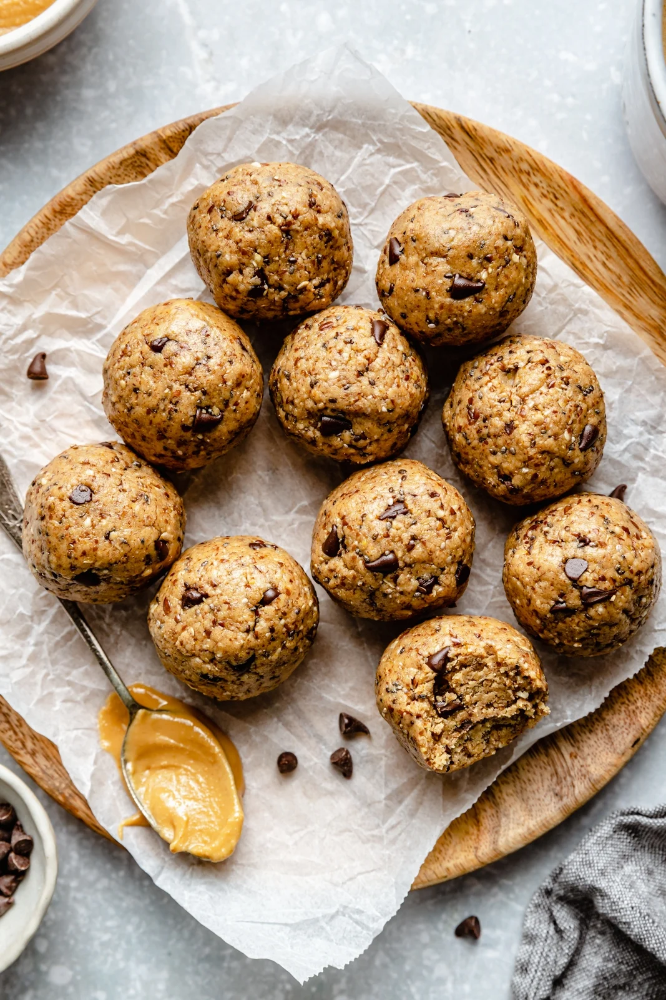

Chocolate Protein Bites

Description
These yummy chocolate protein bites are healthy and perfect for snacking. The recipe can be modified with shredded coconut, nuts, seeds, pumpkin, or bananas. You can use a food processor, but a bowl and spoon will also suffice. It takes 10 mins to prep, 30 mins to freeze (at least).
Ingredients
- 1 cup rolled oats
- ½ cup natural peanut butter
- ⅓ cup honey
- ¼ cup chopped dark chocolate
- 2 tablespoons flax seeds
- 2 tablespoons chia seeds
- 1 tablespoon chocolate-flavored protein powder, or to taste
Steps
- Stir oats, peanut butter, honey, chocolate, flax seeds, chia seeds, and protein powder together in a bowl until evenly mixed. Cover bowl with plastic wrap and refrigerate for 30 minutes.
- Scoop chilled mixture into balls. Keep cold until serving.
- Enjoy!